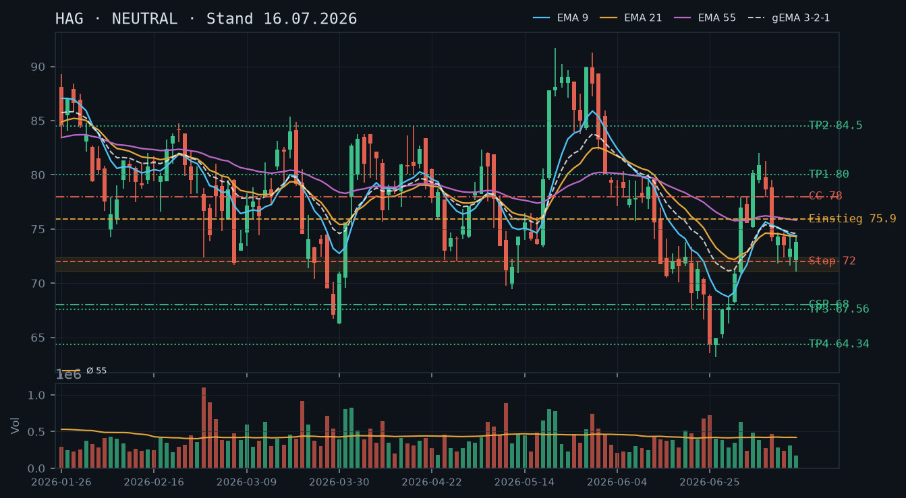
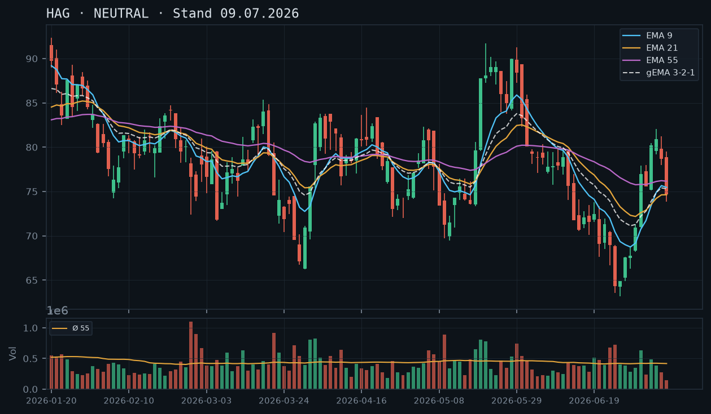
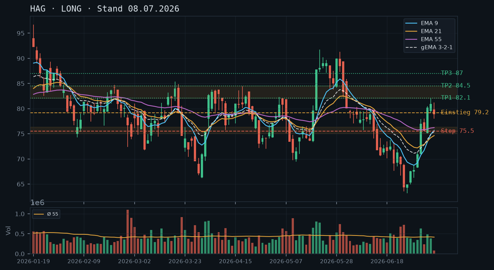

HAG
Analyse-Historie · neueste zuerstHAG hat am 17.07. mit einer starken Bullish-Engulfing-Kerze aus dem Range-Boden abgedreht und testet nun den EMA55-Widerstand – der erste echte Ausbruchsversuch seit der Konsolidierungsphase, der ein Long-Bias und einen Covered Call auf die bestehende Position rechtfertigt.

1 · Trendstruktur
HAG befindet sich in einem übergeordneten Abwärtstrend seit dem Hoch bei 91,72 (21.05.), hat aber seit dem Mehrmonats-Tief bei 63,56 (25.06.) eine mehrstufige Erholungsbewegung eingeleitet. Die Tiefstruktur zeigt: 63,56 → 67,56 (29.06.) → 71,08 (15.07.) – jedes Reaktionstief liegt höher als das vorherige, ein erstes bullisches Signal. Auf der Hochseite: 76,96 (02.07.) → 82,02 (07.07.) → 76,74 (17.07.) – die Hochs haben sich noch nicht final bestätigt, aber der 17.07.-Schlusskurs bei 76,32 ist das höchste Level seit dem Range-Ausbruchsversuch vom 02./07.07. Der EMA55 bei aktuell 75,74 wurde am 17.07. erstmals seit Mitte Juni wieder gebrochen. Die aus der 16.07.-Analyse deklarierte Range 71,08–76,22 ist nach oben verlassen worden – das ist eine strukturelle Veränderung.
2 · Candlestick-Formationen
Die Kerze vom 17.07. (Open 71,00 / High 76,74 / Low 71,00 / Close 76,32) ist eine klassische Bullish Engulfing / Hammer-Hybrid: langer Unterschatten, kleiner Oberschatten, Schlusskurs nahe Tageshoch. Das Volumen lag bei 364.374 – 0,87× Schnitt, also nicht überdurchschnittlich, was die Qualität des Signals leicht mindert. Dennoch: Der Körper engulfed die gesamte Vorwochenkompression (16.07.-Kerze mit Range 72,24–74,08), und der Schlusskurs über EMA55 ist ein klares Signal. Die Vortageskerzen (13.–16.07.) zeigen vier enge Doji/Inside-Bar-Strukturen mit abnehmendem Volumen (0,55 / 0,74 / 0,42 / 0,41× Schnitt) – klassische Kompression vor Ausbruch.
3 · EMA-Lage (9 / 21 / 55)
EMA9: 74,58 / EMA21: 74,40 / EMA55: 75,74 / gEMA321: 74,71. Die Reihenfolge EMA9 > EMA21 ist bullisch, aber beide noch unter EMA55 – der Schlusskurs 76,32 hat den EMA55 am 17.07. gebrochen, während der gEMA321 mit 74,71 noch hinterherläuft. Das Bild: Kurs über EMA55, aber EMA9 und EMA21 noch darunter – das ist eine bullische Divergenz (Price leads EMAs), typisch für frühe Ausbruchsphasen. Solange EMA9 unter EMA55 bleibt, ist der EMA-Verbund noch nicht vollständig bullisch ausgerichtet. Der Abstand Kurs zu EMA55 beträgt ca. +0,8% – noch kein überhitztes Signal.
4 · Trade-Setup
| Richtung | Long |
| Einstieg | 76,35 (Stop-Buy über 17.07.-Schlusskurs / aktuelle Preislage prüfen) |
| Stop | 73,50 (unter dem 13.07.-Tief und der alten Range-Oberkante – struktureller Bruch würde Setup invalidieren) |
| Ziel | 80,00 (Zwischenziel, psychologisch + Hochpunkt 06.07.) / 82,00 (Hochzone 07.-08.07.) |
| CRV | Ziel 1: ~1,3:1 / Ziel 2: ~2,1:1 (bei Einstieg ~76,35, Stop 73,50) |
5 · Stillhalter (max. 12 Tage)
Mit 100 Aktien im Bestand (IBKR-Snapshot bestätigt) ist ein Covered Call die natürliche Erweiterung des Long-Bias: Prämie kassieren auf dem Weg in den Widerstand. Ein CSP ist nach dem Ausbruch aus der Range strukturell unattraktiver – der Support liegt jetzt tiefer und der Puffer wäre entweder zu groß (unrentable Prämie) oder zu klein (schlechtes Andienungsrisiko). Kein CSP empfohlen.
| Geschäft | Covered Call |
| Strike | 80.0 |
| Puffer | 4.8 % |
| Zone | über dem 06.07.-Hochpunkt 80,46 und der psychologischen Marke 80,00 – erste belastbare Widerstandszone nach dem Ausbruch |
| Verfall bis | 2026-07-25 (6 Tage, nächster Standardfreitag – Verfügbarkeit für HAG prüfen) |
| Begründung | Der Strike 80,00 liegt über der unmittelbaren Widerstandszone 80,18–80,46 (06.07.-Hochs) und bietet ~4,8% Puffer zum letzten Schlusskurs 76,32. Bei Andienung würde die Position zu 80,00 abgerufen – das wäre ein Exit über dem aktuellen Kurs und technisch im ersten Widerstandscluster. Akzeptables Szenario, da der übergeordnete Trend noch abwärts gerichtet ist und ein Scheitern an 80+ wahrscheinlicher ist als ein direkter Durchbruch. In der Optionskette prüfen: Prämie mindestens 0,50–0,80 (als Orientierung für ~0,6-1% Prämienrendite auf den Strike), Delta idealerweise -0,20 bis -0,30, Spread und Open Interest auf Liquidität prüfen. |
Bestand: Laut IBKR-Snapshot ist eine Long-Aktienposition von 100 Stück vorhanden, keine offenen Optionspositionen. Der am 17.07. vollzogene Ausbruch über EMA55 und Range-Oberkante ist positiv für die Position. Der empfohlene Covered Call Strike 80,00 (Verfall 25.07.) erlaubt weitere Aufwärtsbeteiligung bis zur ersten Widerstandszone bei 80,18–80,46 und begrenzt dann den Ertrag – das ist im aktuellen Marktumfeld (übergeordneter Downtrend, schwaches Ausbruchsvolumen) ein sinnvoller Kompromiss. Roll-Trigger: Sollte HAG vor Verfall über 80,00 schließen und der EMA9 über EMA55 kreuzen, wäre ein Roll nach oben (Strike 82,00–83,00, gleicher Verfall oder +1 Woche) zu prüfen. Stop-Überlegung für die Aktienposition: Schlusskurs unter 73,50 würde die Ausbruchsthese invalidieren.
Ausführliche Analyse vom 19.07.2026 anzeigen
HAG – Technische Analyse & Stillhalter-Setup | 19.07.2026
Abgleich mit früheren Analysen
Die Long-Empfehlung vom 08.07. (Einstieg 79,20, Stop 75,50, Ziel 84,50) wurde durch den Rücksetzer auf 73,84 am 09.07. zu Recht verworfen. Die NEUTRAL-Einschätzung vom 09.07. und 16.07. war korrekt: HAG komprimierte zwischen 71,08 und 74,68, ohne eine klare Richtung zu zeigen. Die aus der 16.07.-Analyse abgeleiteten Trigger-Level (Long über 75,90 Tagesschluss über EMA55) wurden am 17.07. mit dem Schlusskurs 76,32 und einem EMA55 bei 75,74 erstmals aktiviert. Die NEUTRAL-Phase ist damit beendet – das Setup wechselt zurück auf LONG. Der CSP bei 68,00 (16.07.-Analyse) hatte mit der Ausbruchsbewegung seinen Puffer weiter vergrößert und wäre bei einem Abschluss vor dem 17.07. bereits abgelaufen oder mit Gewinn schließbar gewesen; der CC bei 78,00 (16.07.) liegt jetzt im Zielbereich des aktuellen Aufwärtsimpulses.
1. Trendstruktur – Detail
Übergeordnet: Abwärtstrend seit 91,72 (21.05.) mit Zwischenhochs bei 90,00 (28.05.), 87,46 (27.05.), 82,02 (07.07.). Das Tief bei 63,56 (25.06.) bleibt der entscheidende Anker. Seitdem: höhere Tiefs am 29.06. (64,92), 01.07. (68,18), 09.07. (73,84), 15.07. (71,08) – Trendwende auf Tagesbasis noch nicht bestätigt, aber die Tiefstruktur dreht.
Widerstandszonen (oben):
- 76,74–78,00: Schlusskurs 17.07. + Hochpunkte 03./08.07. – unmittelbarer Bereich, Markt ist gerade hier
- 80,18–82,02: Hochzone 06.–07.07. – erster signifikanter Widerstand
- 84,00–84,85: Hochzone März/Mai (mehrfach bestätigt)
- 87,80–91,72: Langfristige Resistenz
Supportzonen (unten):
- 74,30–75,90: Alte Range-Oberkante, jetzt erster Support (mehrfach getestet 09.–15.07.)
- 71,08–72,36: Vierfach bestätigte Range-Unterkante (10.–15.07.) – strukturell wichtig
- 67,56–68,96: Ende-Juni-Cluster
- 63,56: Absolutes Mehrmonatstief
2. Candlestick-Formationen – Detail
Die Kompressionsphase 13.–16.07. (vier Kerzen mit rel. Volumen 0,55 / 0,74 / 0,42 / 0,41) ist ein Lehrbuchbeispiel für Volatilitätskompression vor Ausbruch. Die vier Kerzen hatten Ranges von maximal 2,32 Punkten. Der 17.07. löste diese Kompression mit einer Range von 5,74 Punkten (71,00–76,74) auf. Das Schlussniveau 76,32 liegt im oberen Quintil der Tagesrange – bullisch. Einschränkung: Das Volumen am 17.07. (364.374 = 0,87× Schnitt) ist unterdurchschnittlich. Starke Ausbrüche werden idealerweise von >1,3× Durchschnittsvolumen begleitet. Das schwache Volumen erhöht das Risiko eines Fehlausbruchs – daher ist ein Stopp-Buy-Ansatz (Bestätigung durch weiteres Momentum heute, 19.07.) dem Blind-Einstieg vorzuziehen.
3. EMA-Analyse – Detail
EMA9 (74,58) > EMA21 (74,40) – micro-bullisch. Beide unter EMA55 (75,74) – der Verbund ist noch nicht vollständig gedreht. Der Schlusskurs 76,32 liegt über allen drei EMAs, was Price over EMAs signalisiert. Der gEMA321 (74,71) ist der "Gravitationspunkt" des Verbunds – der Abstand Kurs zu gEMA321 beträgt +1,61 Punkte (+2,1%). Das ist moderat, nicht überkauft. Nächste EMA-Kreuzung im Fokus: EMA9 kreuzt EMA55 (Bullish Cross) wenn EMA9 von 74,58 auf 75,74+ steigt – bei anhaltendem Aufwärtsmomentum in 3–5 Handelstagen erreichbar. Bis dahin gilt: Kurs über EMA55, EMAs noch im Aufholprozess.
4. Trade-Setups (A/B/C)
Setup A – Momentum Long (bevorzugt):
Einstieg: Stop-Buy bei 76,75 (über 17.07.-Hoch, Ausbruchsbestätigung)
Stop: 73,50 (unter 13.07.-Tief und alter Range-Oberkante 74,30)
Ziel 1: 80,18 (06.07.-Hoch) – CRV: (80,18-76,75)/(76,75-73,50) = 3,43/3,25 = 1,1:1
Ziel 2: 82,00 (07.07.-Hoch) – CRV: (82,00-76,75)/(76,75-73,50) = 5,25/3,25 = 1,6:1
Ziel 3: 84,50 (Hauptziel aus 08.07.-Analyse, unverändert) – CRV: (84,50-76,75)/3,25 = 2,4:1
Setup B – Pullback Long (konservativer):
Einstieg: Limit bei 74,50–75,00 (Pullback auf EMA55 / alte Range-Oberkante)
Stop: 72,00 (unter Support 71,08–72,36)
Ziel 1: 80,00 – CRV bei 74,75: (80,00-74,75)/(74,75-72,00) = 5,25/2,75 = 1,9:1
Ziel 2: 84,50 – CRV: 9,75/2,75 = 3,5:1
Voraussetzung: Pullback ohne Unterschreitung EMA55 (derzeit 75,74, aber fallend zu ~75,50 in 1–2 Tagen)
Setup C – Abwarten (defensiv):
Bei Schlusskurs unter 74,30 (alte Range-Oberkante) wird der Ausbruch als Fehlausbruch klassifiziert. Dann zurück zu NEUTRAL, Wiederholung der 16.07.-Logik mit neuem Trigger-Level.
5. Stillhalter-Analyse – Detail (Schwerpunkt)
Covered Call – Strike 80,00, Verfall 25.07.2026
Zonen-Herleitung: Das 06.07.-Hoch bei 80,46 und der 06.07.-Schlusskurs 80,18 bilden die erste klar ablesbare Widerstandszone nach dem aktuellen Ausbruch. Der Bereich 80,00–80,46 wurde am 06.07. getestet und hat seitdem nicht mehr als Unterstützung funktioniert – er ist als unbestätigter, aber strukturell relevanter Widerstand zu werten. Der Strike 80,00 liegt exakt an der psychologischen Runde Zahl und unmittelbar unter diesem Cluster – ideal für einen CC.
Puffer-Rechnung: Schlusskurs 17.07.: 76,32. Strike 80,00. Puffer: (80,00-76,32)/76,32 = 4,8%. Bei 6 Tagen Restlaufzeit ist das ein substanzieller Abstand, der nur bei starkem Ausbruchsmomentum bedroht wird.
Andienungsszenario: Wird HAG zu 80,00 abgerufen, wäre das ein Exit ~4,8% über dem aktuellen Niveau und innerhalb der ersten Widerstandszone. Angesichts des übergeordneten Abwärtstrends und des schwachen Ausbruchsvolumens am 17.07. ist ein Scheitern unter 80,46 das wahrscheinlichere Szenario. Die Andienung bei 80,00 wäre strukturell akzeptabel – keine Aktienabgabe unter aktuellem Kurs, Exit in relevanter Resistenzzone.
IBKR-Bestätigung: 100 Aktien im Bestand laut Snapshot – ein Kontrakt Covered Call ist möglich. Keine bestehenden Short-Optionen, keine Rollnotwendigkeit.
Roll-Trigger:
- Defensiv rollen: Bei Kurs >79,00 und 2–3 Tage vor Verfall: Roll auf Strike 82,00, Verfall 01.08. (gleiche oder höhere Prämie anstreben)
- Aggressiv rollen: Bei bullischem EMA9/EMA55-Crossover und Kurs >80,50: Roll auf Strike 84,00–85,00, Verfall 01.08.
- Schließen ohne Roll: Bei Kurs <74,30 (Fehlausbruchs-Signal) und CC noch im Geld der Zeitwertzone – CC zurückkaufen, Position neu beurteilen
Was in der Optionskette zu prüfen ist: Prämie für CC 80,00 (Verfall 25.07.) – bei ~4,8% Puffer und 6 Tagen DTE sollte die Prämie mindestens 0,40–0,60 sein, um die Transaktion sinnvoll zu machen. Delta: idealerweise zwischen -0,20 und -0,28. Implizite Volatilität: HAG hatte phasenweise erhöhte IV (Ausbrüche Mai, starke Volumentage) – bei erhöhter IV ist die Prämie entsprechend attraktiver. Spread und Open Interest unbedingt prüfen, da HAG ein Nebenwert mit potenziell eingeschränkter Optionsliquidität ist.
CSP – warum nicht
Nach dem Ausbruch über EMA55 und Range-Oberkante liegt der nächste bestätigte Support bei 71,08–72,36. Ein CSP unter dieser Zone (z.B. Strike 68,00 wie in der 16.07.-Analyse) hätte jetzt einen Puffer von ~11% – die Prämie dafür wäre minimal und das Kapital ineffizient gebunden. Ein CSP näher am Kurs (z.B. 73,00–74,00) wäre zu riskant, da er mitten in der alten Supportzone läge. Kein CSP-Setup mit vertretbarem Risiko/Prämien-Verhältnis vorhanden.
Die verworfene Long-These vom 08./09.07. bleibt zurecht ad acta gelegt – HAG konsolidiert seither richtungslos zwischen 71,08 und 74,68 in einem engen EMA-Kompressionscluster unterhalb von EMA55. Kein klares Setup, aber die gut definierte Range liefert brauchbare Stillhalter-Strikes auf beiden Seiten.

1 · Trendstruktur
Nach dem scharfen Abwärtstrend von den Maihochs (90,00 am 28.05.) bis zum Junitief (63,56 am 25.06.) und der kurzen, dann verworfenen Erholung Anfang Juli (Hoch 82,02 am 07.07.) konsolidiert HAG seit dem 09.07. in einer engen Range zwischen 71,08 (Tief 15.07.) und 74,68 (Hoch 10.07.). Die Unterstützungszone um 71,08–72,36 wurde inzwischen viermal getestet (10., 13., 14., 15.07.) – ein zunehmend relevanter Bereich.
2 · Candlestick-Formationen
13.07.: Schluss 73,50, innerhalb der Range. 14.07.: Tief 71,62, Schluss 73,16 – erneute Verteidigung der unteren Zone. 15.07.: Tief 71,08 (neues Range-Tief), Schluss 73,80 – deutliche Erholung vom Tagestief, aber bei sehr geringem Volumen (rel_volumen 0,42, das niedrigste in der gesamten Serie) – kein überzeugendes Signal in irgendeine Richtung.
3 · EMA-Lage (9 / 21 / 55)
Sehr enger Kompressionscluster: EMA21 (74,30) ≈ EMA9 (74,36), nur 0,06 Punkte auseinander, gema_321 (74,58) knapp darüber, EMA55 (75,81) als nächste Hürde. Der Kurs (73,80) bewegt sich mitten im unteren Teil dieses Clusters – klassische Richtungslosigkeit, keine verwertbare Trendaussage.
4 · Trade-Setup
| Richtung | Kein Trade |
| Einstieg | Abwarten: Long über 75,90 (Tagesschluss über EMA55 und jüngste Hochs) oder Short unter 71,00 (Bruch der viermal getesteten Zone) |
| Stop | Long-Stop: 72,00 (unter der Unterstützungszone) / Short-Stop: 74,00 (über dem EMA-Cluster) |
| Ziel | Long: 80,00 (Zwischenziel) / 84,50 (Hauptziel, unverändert aus der 08.07.-Analyse) / Short: 67,56 (Ende-Juni-Niveau) / 64,34 (Junitief) |
| CRV | Long ~1,1:1 (Ziel 1) / ~2,2:1 (Ziel 2); Short ~1,2:1 (Ziel 1) / ~2,2:1 (Ziel 2) – beide erst bei Bestätigung aktiv |
5 · Stillhalter (max. 12 Tage)
Die viermal getestete Unterstützungszone 71,08–72,36 und der EMA55-Widerstand bei 75,81 bilden zusammen ein gutes Fundament für beidseitige Stillhaltergeschäfte in dieser Range-Phase.
| Geschäft | Cash-Secured Put |
| Strike | 68.0 |
| Puffer | 7.9 % |
| Zone | unter der viermal getesteten Zone 71,08–72,36 (10., 13., 14., 15.07.) |
| Verfall bis | 2026-07-24 (8 Tage, FALLS für HAG mit diesem Verfall handelbar – sonst nächster verfügbarer Termin prüfen) |
| Begründung | Strike liegt klar unter der zunehmend gut bestätigten Range-Unterstützung. Andienung bei 68,00 wäre ein Einstieg unter der aktuellen Konsolidierung, aber noch über dem eigentlichen Junitief (63,56) – strukturell vertretbar. Prüfen: Prämie im Verhältnis zum 7,9%-Puffer, tatsächliche Verfügbarkeit und Liquidität dieses Strikes/Verfalls für HAG. |
| Geschäft | Covered Call |
| Strike | 78.0 |
| Puffer | 5.7 % |
| Zone | über EMA55 (75,81) und der Widerstandszone 76,22 (alte Kompressionsobergrenze) |
| Verfall bis | 2026-07-24 (8 Tage, gleicher Vorbehalt wie beim CSP) |
| Begründung | Strike liegt über EMA55, der aktuell relevantesten Widerstandsmarke. Andienung bei 78,00 wäre nach einem Ausbruch aus der Range ein akzeptabler Exit. Prüfen: Prämie im Verhältnis zum 5,7%-Puffer, Liquidität und tatsächliche Verfügbarkeit des Verfallstermins. |
Ausführliche Analyse vom 16.07.2026 anzeigen
HAG – Weiterhin richtungslose Konsolidierung nach verworfener Long-These
1. Bestätigung der Verwerfung vom 09.07.
Die Entscheidung, die Long-These vom 08.07. bereits am Folgetag zu verwerfen, war richtig: Statt einer Fortsetzung der Erholung folgte eine mehrtägige Seitwärtsbewegung zwischen 71 und 75 ohne klaren Impuls in eine Richtung.
2. Die aktuelle Range im Detail
Die Unterstützungszone 71,08–72,36 wurde in der vergangenen Woche gleich viermal getestet – ein zunehmend relevanter Bereich, auch wenn das Volumen dabei durchweg unterdurchschnittlich blieb (zuletzt nur 0,42 am 15.07., der niedrigste Wert der gesamten Serie). Nach oben bildet EMA55 (75,81) zusammen mit der alten Kompressionsobergrenze (76,22) die nächste Hürde.
3. Setup-Szenarien
Für eine Long-Fortsetzung braucht es einen Tagesschluss über 75,90 mit Ziel 80,00 (Zwischenziel) bzw. dem unveränderten Hauptziel 84,50 aus der 08.07.-Analyse. Für eine Short-Fortsetzung des übergeordneten Trends braucht es einen Bruch unter 71,00 mit Zielen bei 67,56 und 64,34 (Junitief). Beide Szenarien bieten bei Bestätigung ein CRV um 2,2:1 zum jeweiligen Hauptziel, sind aber aktuell nicht ausgelöst.
4. Stillhalter-Vertiefung
CSP bei 68,00 (7,9% Puffer): Nutzt die vierfach getestete Range-Unterstützung. CC bei 78,00 (5,7% Puffer): Nutzt EMA55 als dynamischen Widerstand. WICHTIG: Für deutsche Nebenwerte wie HAG sind Eurex-Optionen oft nur mit monatlichem Verfall (dritter Freitag) handelbar – der 12-Tage-Rahmen dieser Analyse setzt wöchentliche Verfallstermine voraus, die für HAG möglicherweise nicht existieren. Bitte vor Positionierung die tatsächlich verfügbaren Kontrakte prüfen. Rollentrigger CSP: Tagesschluss unter 71,00. Rollentrigger CC: Tagesschluss über 75,90.
5. Abgleich mit früheren Analysen
Die Verwerfung der Long-These vom 09.07. wird durch die seitherige Seitwärtsbewegung vollständig bestätigt. Es gibt weiterhin kein aktivierbares Aktien-Setup, aber die Range hat sich präzisiert und liefert jetzt konkretere Stillhalter-Zonen als zuvor.
Die gestrige Long-Empfehlung wird verworfen: HAG hat heute mit einem Rücksetzer auf 73.84 das Erholungs-Setup beschädigt und zeigt nun ein unklares Bild zwischen Unterstützung und weiterem Abgabedruck.

1 · Trendstruktur
HAG befindet sich seit dem Hoch vom 29. Mai (91.26) in einem intakten Abwärtstrend mit tieferen Hochs und tieferen Tiefs. Die Erholungsbewegung vom Tief 25. Juni (63.56) bis zum Hoch 07. Juli (82.02) wurde heute mit einem Rückgang auf 73.84 signifikant zurückgesetzt – ein mögliches bearishes Lower-High-Muster entsteht. Der Kurs notiert nun wieder nahe der 74–75-Zone, die als kurzfristige Unterstützung dient.
2 · Candlestick-Formationen
Die heutige Kerze (09.07.) ist eine ausgeprägte bearishe Kerze mit langem Docht (Hoch 79.54) und tiefem Close (74.66), was auf starken Verkaufsdruck hindeutet. Das extrem niedrige Volumen von nur 0.35x des 55-Perioden-Schnitts relativiert die Bewegung zwar etwas, bestätigt aber keine Käufer. Die letzten drei Kerzen zeigen ein bearishes Muster: Shooting Star (08.07.) gefolgt von einem harten Abverkauf heute.
3 · EMA-Lage (9 / 21 / 55)
Der EMA9 (75.46) liegt knapp über EMA21 (74.63), der EMA55 (76.16) befindet sich darüber – eine ungeordnete Gemengelage. Der gema_321 (75.30) liegt fast auf Höhe der EMAs, was eine neutrale bis leicht bärische Struktur signalisiert. Der Kurs schloss bei 74.66 knapp unterhalb des gema_321 und des EMA9, was den kurzfristigen Aufwärtsimpuls der Vorwoche negiert.
4 · Trade-Setup
| Richtung | Kein Trade |
| Einstieg | Abwarten – Kein klares Setup |
| Stop | n/a |
| Ziel | n/a |
| CRV | n/a |
Ausführliche Analyse vom 09.07.2026 anzeigen
HAG – Tagesanalyse 09.07.2026
1. Trendstruktur
HAG hat seit dem Hoch vom 29. Mai 2026 bei 91.26 einen klaren Abwärtstrend etabliert. Die Struktur zeigt tiefere Hochs und tiefere Tiefs: Hoch 29.05. (91.26) → Tief 25.06. (63.56) → Erholungshoch 07.07. (82.02) → Heutige Kerze bricht Tief 08.07. (78.00) und schließt bei 74.66.
Das Erholungshoch vom 07.07. bei 82.02 liegt deutlich unter dem Mai-Hoch, was die übergeordnete Abwärtstrendstruktur bestätigt. Der heutige Rücksetzer bildet potenziell ein neues Lower High, wenn der Kurs nun unter das Tief vom 02.07. (70.90) bricht.
Wichtige Levels:
- Widerstand: 80.50–82.00 (Hochs 06.–07.07.)
- Unterstützung 1: 73.50–74.50 (Bereich der heutigen Tiefs, Konsolidierung Ende April)
- Unterstützung 2: 70.90 (Tief 01.07.) und 67.56 (Tief 29.06.)
- Kritische Unterstützung: 63.56 (Tief 25.06.) – Jahrestief im beobachteten Zeitraum
2. Candlestick-Formationen
Die letzten drei Kerzen erzählen eine klare Geschichte:
- 07.07. (80.92 Close): Starke Aufwärtskerze, Continuation der Erholung.
- 08.07. (78.68 Close): Shooting-Star-Charakter – Intraday-Hoch 81.24 wurde nicht gehalten, Kerze schloss im unteren Drittel der Range. Erstes Warnsignal.
- 09.07. (74.66 Close): Bearishe Kerze mit Intraday-Hoch 79.54 (Rejection am EMA55 ~76.16 und gema_321) und Schlusskurs nahe Tagestief 73.84. Der Kurs verlor von Open (78.86) bis Close (74.66) über 5% intraday.
Das Volumen von 147.868 (rel. 0.35x) ist außergewöhnlich gering. Einerseits relativiert dies die Schwäche, andererseits fehlen deutlich die Käufer, die den Rücksetzer aufgefangen hätten. Dies spricht nicht für eine starke Unterstützung.
3. EMA-Analyse
Der EMA9 steht bei 75.46, EMA21 bei 74.63 und EMA55 bei 76.16. Der gema_321 bei 75.30 zeigt alle drei EMAs in enger Bündelung – kein klarer Trend ist aus der EMA-Struktur ableitbar. Der Kurs (74.66) liegt knapp unter dem gema_321 (75.30), was den kurzfristigen Aufwärtsimpuls der vergangenen Woche zunichte macht.
Die Vorwoche zeigte eine ermutigende Entwicklung: EMA9 drehte nach oben und begann EMA21 zu übertreffen. Dieser Aufwärtsdrall ist durch den heutigen Rücksetzer gestoppt. EMA9 (75.46) und EMA21 (74.63) liegen nur 0.83 Punkte auseinander – ein Golden Cross ist weit entfernt. Der EMA55 fällt weiter (von 76.56 am 25.06. auf 76.16 heute), was den übergeordneten Abwärtstrend bestätigt.
Der gema_321 bei 75.30 fungierte heute als Intraday-Widerstand – der Kurs konnte den Verbund nicht nachhaltig überwinden und wurde abgewiesen.
4. Trade-Setups und Bewertung
Bewertung der gestrigen Long-Empfehlung: Die gestrige Empfehlung eines Long-Setups mit Einstieg bei 79.20 und Stop bei 75.50 wird hiermit verworfen. Der Kurs hat das gestrige Tief von 78.00 gebrochen und schloss bei 74.66 – der Stop bei 75.50 wäre ausgelöst worden. Die Erholungsstruktur ist beschädigt.
Setup A – Abwarten auf Stabilisierung (bevorzugt): Das unklare Bild mit niedrigem Volumen, EMA-Bündelung und der beschädigten Erholungsstruktur lässt kein valides Setup zu. Die Zone 73.50–74.50 muss zunächst als Unterstützung bestätigt werden. Erst ein Schlusskurs über 79.50 (oberhalb EMA55 und gema_321) mit erhöhtem Volumen (>1.0x) würde ein neues Long-Setup rechtfertigen.
Setup B – Long bei Bestätigung über 79.50:
- Einstieg: 79.60 Stop-Buy
- Stop: 75.30 (unter heutigem Tief und gema_321)
- Ziel 1: 82.00 (Hoch 07.07.) → CRV 0.6:1 – unzureichend
- Ziel 2: 84.50 (April-Widerstand) → CRV 1.1:1 – grenzwertig
- Fazit: Setup B nur bei sehr starkem Volumen-Aufbruch interessant.
Setup C – Short unter 70.90:
- Einstieg: 70.80 Stop-Sell unter Tief 01.07.
- Stop: 74.80 (über heutigem Tief / Widerstand)
- Ziel 1: 67.56 (Tief 29.06.) → CRV 0.8:1 – unzureichend
- Ziel 2: 63.56 (Jahrestief 25.06.) → CRV 1.8:1 – akzeptabel
- Fazit: Setup C bei Trendfortsetzung nach unten valide, aber Bruch von 70.90 noch nicht erfolgt.
Gesamtfazit: Abwarten ist die klügste Strategie. Das heutige niedrige Volumen (0.35x) könnte auf eine temporäre Sommerpause hindeuten. Erst bei klarer Richtungsentscheidung – Ausbruch über 79.50 oder Bruch unter 70.90 – sollte positioniert werden.
HAG zeigt nach einem ausgeprägten Abwärtstrend seit Ende Mai eine erste Erholungsbewegung mit bullischer Impulsstruktur, die EMAs beginnen zu drehen – ein Long-Setup mit engem Stop bietet sich an.

1 · Trendstruktur
HAG fiel von einem Hoch bei ~91,72 (21. Mai) bis auf ein Tief bei ~63,18 (26. Juni) – ein Rückgang von knapp 31%. Seitdem läuft eine Erholung mit höheren Tiefs: 63,56 → 64,92 → 66,26 → 70,9 → 75,1. Das jüngste Hoch bei 82,02 (07. Juli) markiert ein neues kurzfristiges Hochpunkt. Wichtige Widerstandszone liegt bei 82–84 (ehem. Unterstützung April/Mai). Support: 75–76 (Tagestiefs 02./03. Juli).
2 · Candlestick-Formationen
Der 02. Juli zeigte eine starke Aufwärtskerze (70,9→76,96, rel. Volumen 1,5x) als Impulssignal. Am 06. Juli folgte ein weiterer bullischer Ausbruch auf 80,18. Am 07. Juli eine Inside-Bar-ähnliche Kerze mit engem Range – konsolidierend. Die heutige Kerze (08. Juli) zeigt einen kleinen Rücksetzer mit tieferem Low (78,0) bei sehr geringem Volumen (rel. 0,19x) – kein Verkaufsdruck, eher Konsolidierung.
3 · EMA-Lage (9 / 21 / 55)
EMA9 (75,69) liegt über EMA21 (74,64) und hat EMA55 (76,22) fast erreicht – ein bullisches Arrangement im Entstehen. Der gema_321 (75,43) zeigt erste Aufwärtsdynamik. Der Kurs (78,86) handelt deutlich über EMA9/21/gema_321, was die kurzfristige Stärke bestätigt. EMA55 bei 76,22 fungiert als nächste Unterstützung.
4 · Trade-Setup
| Richtung | Long |
| Einstieg | 79.20 (Stop-Buy über heutiges Intraday-Hoch / Bestätigung) |
| Stop | 75.50 (unter EMA55 und Tiefs 02./03. Juli) |
| Ziel | 84.50 (Widerstandszone April/Mai) |
| CRV | 2.1 : 1 |
Ausführliche Analyse vom 08.07.2026 anzeigen
HAG – Detailanalyse (08. Juli 2026)
1. Trendstruktur
HAG befand sich von Mitte März bis Ende Juni in einem übergeordneten Abwärtstrend: Vom Zwischenhoch ~85,35 (18. März) über die Erholung auf 91,72 (21. Mai) folgte ein harter Sell-off bis 63,18 (26. Juni). Dieser Rückgang von rund 31% vom Allzeithoch im Datenfenster prägte die Gesamtstruktur.
Seit dem Tief vom 26. Juni baut sich jedoch eine Erholungsstruktur auf: Steigende Tiefs – 63,18 → 64,92 → 66,26 → 70,9 → 75,1 – sowie steigende Hochs – 64,9 → 67,62 → 71,3 → 78,0 → 82,02. Dies entspricht einer klassischen Trendwendestruktur im kurzfristigen Zeitrahmen.
Wichtige Levels:
– Support 1: 75,10–76,00 (Tiefs 02./03. Juli + EMA55)
– Support 2: 70,90 (Tief 01. Juli)
– Widerstand 1: 82,00–82,10 (Hoch 07. Juli)
– Widerstand 2: 83,50–84,50 (April-Range-Mitte, mehrfach getestet)
– Widerstand 3: 87,00–91,72 (Mai-Hochs)
2. Candlestick-Formationen
Die Kerze vom 02. Juli (open 71,0, close 76,96, Tief 70,9) war mit rel. Volumen 1,5x ein klares Impulssignal nach oben – ein bullischer Marubozu-artiger Anstieg, der den Abwärtstrend brach.
Am 06. Juli folgte eine weitere starke Aufwärtskerze (75,1→80,18) mit 1,15x Volumen, die den Breakout über die 78–80-Zone bestätigte. Der 07. Juli bildete eine Inside-Bar / enge Konsolidierung (79,22–82,02, close 80,92) – Kräftesammlung nach dem Impuls.
Die heutige Kerze (08. Juli: open 79,8, high 81,24, low 78,0, close 78,86) zeigt einen Rücksetzer mit extrem niedrigem Volumen (0,19x – nur 19% des Durchschnitts). Dies ist kein Distribution-Signal, sondern ein Zeichen fehlenden Verkaufsdrucks. Die Kerze könnte als Hammerformation (langer unterer Docht) gewertet werden, was einen Einstieg nach Bestätigung rechtfertigt.
3. EMA-Lage
EMA9: 75,69 | EMA21: 74,64 | EMA55: 76,22 | gema_321: 75,43
Das EMA-Bild entwickelt sich bullisch: EMA9 hat EMA21 nach oben gekreuzt und nähert sich dem EMA55 von unten. Dies ist ein klassisches Frühsignal einer bullischen EMA-Sortierung (EMA9 > EMA21 > EMA55 noch nicht vollständig, da EMA55 noch leicht über EMA9). Der gema_321 zeigt bei 75,43 erstmals wieder steigende Tendenz nach langer Abwärtsphase.
Der Kurs (78,86) handelt über allen drei EMAs – ein bullisches Zeichen. Der Abstand zum EMA9 beträgt ca. +3,2%, was moderat ist und Raum für weiteren Anstieg lässt. Das Unterschreiten des EMA55 bei 76,22 würde das Setup invalidieren.
In der Gesamtschau: Noch Ende Juni handelte der Kurs deutlich unter allen EMAs (z.B. 26. Juni: Kurs 64,34 vs. EMA9 69,35). Der Kursanstieg über alle EMAs in nur 8 Handelstagen zeigt die Stärke der aktuellen Bewegung.
4. Trade-Setups
Setup A (Bevorzugt) – Long nach Konsolidierung:
Einstieg: 79,20 (Überschreiten des heutigen Schlusskurses / Bestätigung morgen früh)
Stop: 75,50 (knapp unter EMA55 bei 76,22 und den Tiefs vom 02./03. Juli – strukturell wichtige Unterstützung)
Ziel 1: 82,10 (Hoch 07. Juli) → CRV: 0,78:1 (eng)
Ziel 2: 84,50 (Widerstandszone April/Mai) → CRV: 2,1:1
Ziel 3: 87,00–88,00 (Mai-Unterstützungszone) → CRV: 3,5:1
Setup B – Aggressiver Einstieg jetzt:
Einstieg: Market/78,90 (heutiger Close)
Stop: 75,50
Ziel: 84,50 → CRV: 1,65:1 (leicht schlechter, aber direkter Einstieg)
Setup C – Konservativ nach Ausbruch:
Einstieg: 82,20 (Stop-Buy über das Hoch vom 07. Juli – Breakout-Bestätigung)
Stop: 78,50 (unter heutigem Low)
Ziel: 87,00 → CRV: 1,3:1 (geringeres CRV, dafür höhere Bestätigung)
Invalidierung: Ein Tagesschluss unter 75,00 würde die Erholungsstruktur zerstören und einen Wiedereintritt in den übergeordneten Abwärtstrend signalisieren. Das absolute Risiko-Level liegt bei einem Unterschreiten des Tiefs vom 26. Juni (63,18).
Konfluenzbereiche: Die Zone 75,00–76,30 zeigt starke Konfluenz aus EMA55, Tiefs der letzten Konsolidierung und dem gema_321 – idealer Bereich für Stop-Positionierung bei Long-Trades.